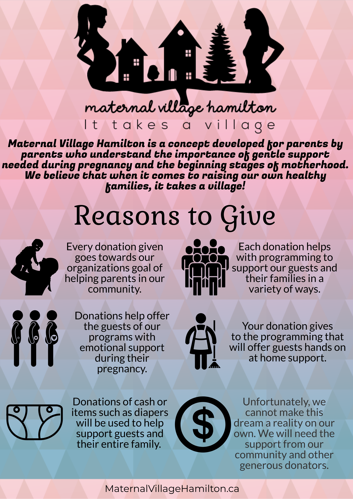

Maternal Village Hamilton is a concept developed for parents by parents who understand the importance of gentle support needed during pregnancy and the beginning stages of parenthood. We believe that when it comes to raising our own healthy families, it takes a village.
Our Programs
Maternal Village Hamilton is planning on providing two types of programs within our agency. An emotional support person while a guest is pregnant and post pregnancy support for up to 12 weeks after birth.
Emotional Support
At any time during a pregnant individual's pregnancy they can become a guest of our program. While a guest, they will be matched up with an emotional support friend who can accompany them to Doctor visits, bloodwork appointments, ultrasounds, and casual social visits.
Post Pregnancy Support
After they give birth, the program will offer guests hands on support. They can have access of up to 12 consecutive weeks of extra program support. Our planned supports being: frozen prepared meals delivered, child minding and light housekeeping.
Frozen Meal Delivery
Once a week, three frozen prepared dinner type meals, geared towards the size of the guests’ family will be delivered.
Child Minding
Once a week, two hours of child minding. During these two hours our guests can take time for themselves, while in their home. Examples: naps, long bath, reading a book, exercise.
Light Housekeeping
Once a week, guests can receive light housekeeping in their current residence.
Extra Support
Being a guest of either of these programs, a guest will have access to a drop-in style support group located at our office where they can also access a clothing closet and a foodbank if needed that has diaper care items, formula, and gift cards to local grocery stores available.
Reasons to donate.
Thank you to those that continue to help grow Maternal Village Hamilton. If you are able to give a donation, please message us to find out how you can help us reach our goals.
Get in touch
You can contact us via Email or Facebook.